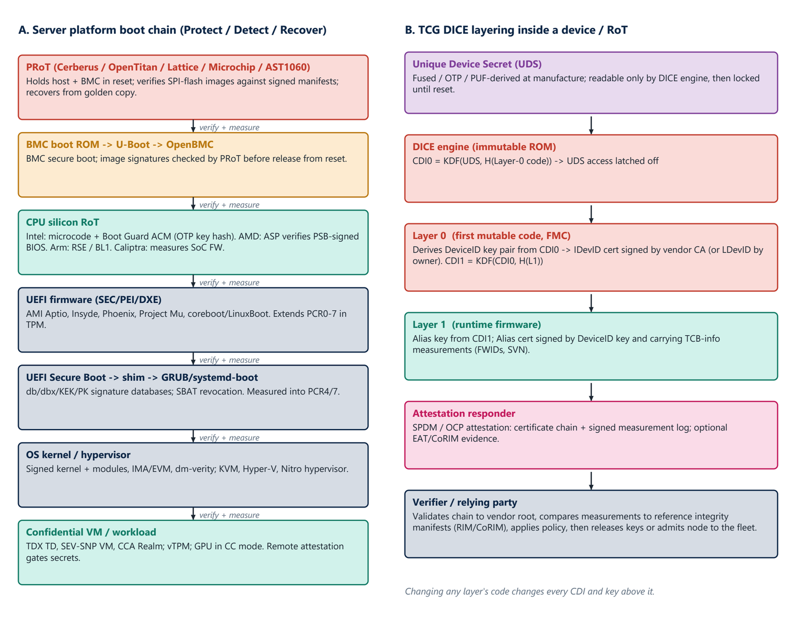
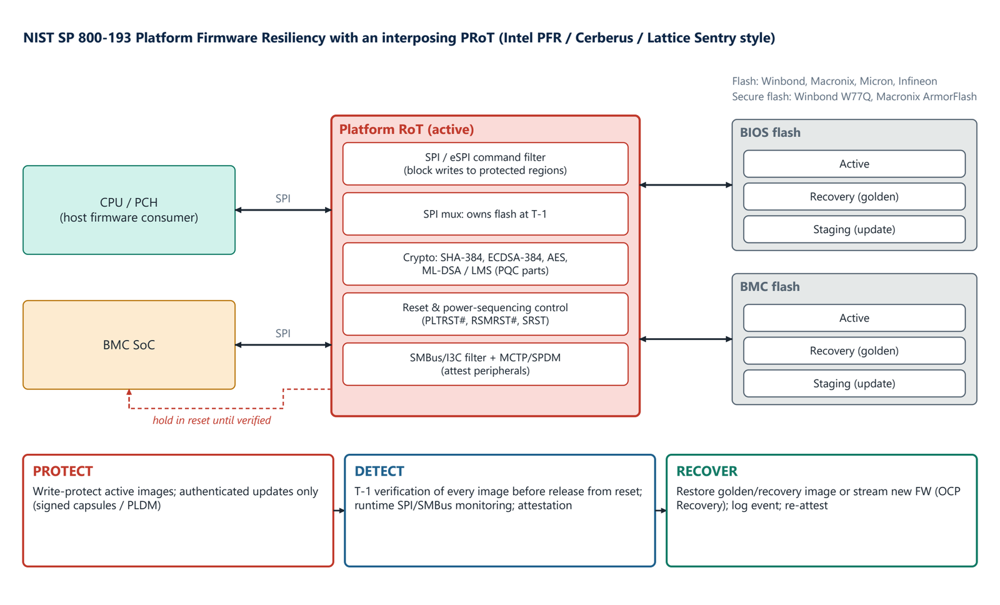
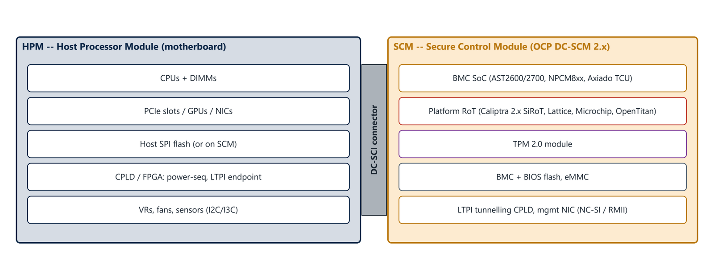
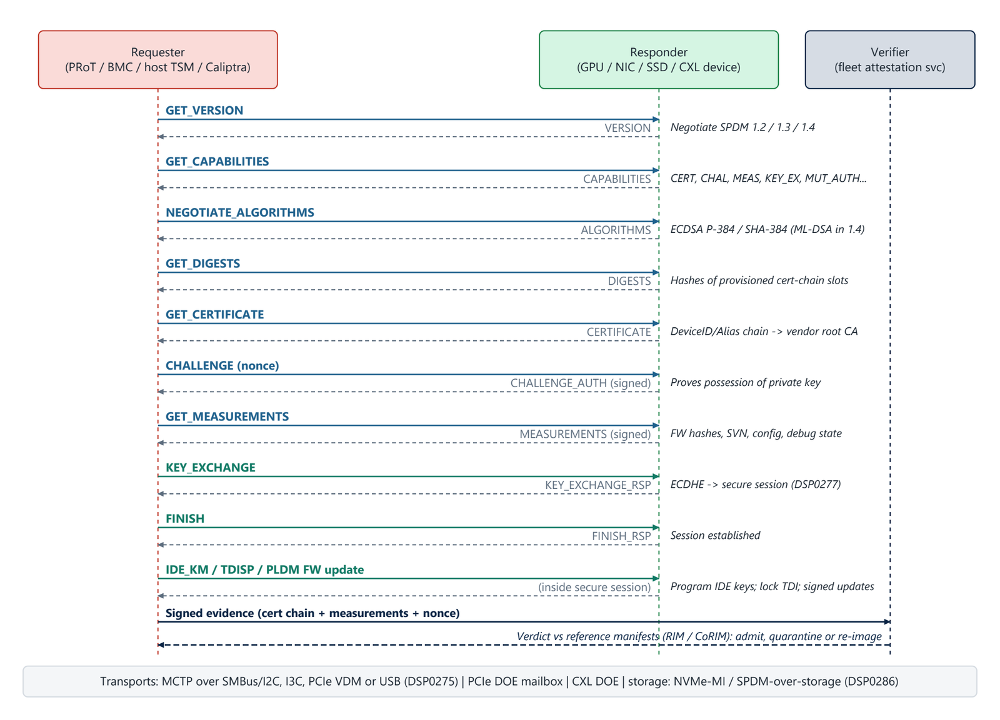

Chapter 7: Roots of Trust: Standards and Chains of Trust¶
Part III goes deep on roots of trust. This chapter covers the standards that turn "trust the hardware" into engineering practice, then four mechanisms that every platform root of trust relies on: the boot chain of trust, TCG DICE layering, NIST SP 800-193 platform firmware resilience with an interposing platform RoT, and the SPDM protocol that lets a verifier check any device. It builds on the ideas in the Roots of Trust, TPM and PKI guide, here applied to a server fleet.
7.1 The standards foundation¶
| Body | Specification | What it defines for RoTs |
|---|---|---|
| NIST | SP 800-193 (2018) Platform Firmware Resiliency | Protect, Detect and Recover guidelines and RoT roles; the basis of PFR, Cerberus and OCP |
| NIST | SP 800-147B; SP 800-155 (draft); SP 800-90A, B, C; FIPS 140-3 | Server BIOS protection; BIOS integrity measurement; random number generators; crypto-module validation |
| TCG | TPM 2.0 Library; DICE Layering, Attestation and Protection Profiles; MARS | Standard RoT for storage and reporting; layered device identity for any chip |
| DMTF | SPDM (DSP0274) 1.0 to 1.4; secured messages (DSP0277); MCTP; PLDM; Redfish | Device authentication, measurement and secure sessions over any bus |
| PCI-SIG | CMA and SPDM over DOE; IDE; TDISP | Device attestation and encryption on PCIe; assigning devices into TEEs |
| CXL Consortium | CXL 2.0 and 3.x IDE; CXL TSP | Encrypted, integrity-protected CXL traffic; TEE-assigned memory |
| OCP Security | Attestation of System Components; Secure Firmware Recovery; Hardware Secure Boot; DC-SCM 2.x; Caliptra; L.O.C.K.; S.A.F.E. | Hyperscaler-agreed profiles that turn the above into procurement requirements |
| CHIPS Alliance and lowRISC | Caliptra; OpenTitan | Open-source RTL and firmware for integrated and discrete RoTs |
| IETF | RATS architecture (RFC 9334); EAT (RFC 9711); CoRIM and CoSWID | Attestation roles, token and reference-value formats |
7.2 The chain of trust and DICE¶
Figure 7.1 shows two ideas side by side. In panel A, the platform boot chain, each stage verifies and measures the next. The platform RoT holds the host and BMC in reset, verifies the SPI-flash images against signed manifests and can recover from a golden copy. The BMC boots under secure boot, its images checked by the PRoT before release from reset. The CPU silicon RoT follows (for Intel, microcode and the Boot Guard ACM with an OTP key hash; for AMD, the ASP verifying PSB-signed BIOS; for Arm, the RSE and BL1; for Caliptra, measurement of the SoC firmware). Then come the UEFI firmware (SEC, PEI and DXE, extending PCR0 to 7 in the TPM), UEFI Secure Boot, shim and the bootloader (with db, dbx, KEK and PK signature databases and SBAT revocation), the signed kernel and hypervisor (IMA, EVM, dm-verity), and finally the confidential VM or workload, where remote attestation gates secrets.
Panel B shows TCG DICE layering inside a device. A Unique Device Secret (UDS), fused or derived from a PUF at manufacture, is readable only by the immutable DICE engine and then locked until reset. The engine computes CDI0 from the UDS and a hash of the Layer-0 code and latches UDS access off. Layer 0 derives a DeviceID key pair from CDI0, with a certificate signed by the vendor CA (IDevID) or the owner (LDevID), and computes CDI1 from CDI0 and the hash of Layer 1. Layer 1, the runtime firmware, derives an alias key and an alias certificate that carries the measurements and security version numbers. An attestation responder (SPDM or OCP attestation) then serves the certificate chain and a signed measurement log, and a verifier validates the chain to the vendor root, compares the measurements with reference manifests, applies policy and then releases keys or admits the node to the fleet. The important property is stated in the figure: changing any layer's code changes every CDI and key above it.

7.3 Platform firmware resilience¶
NIST SP 800-193 asks a platform to Protect, Detect and Recover. Figure 7.2 shows an active platform RoT doing all three. It sits between the CPU or PCH and the BMC, owns the SPI flash through a mux, filters SPI and eSPI commands to block writes to protected regions, runs crypto (SHA-384, ECDSA-384, AES and, in post-quantum parts, ML-DSA or LMS), controls reset and power sequencing, and filters SMBus or I3C with MCTP and SPDM to attest peripherals. BIOS and BMC flash each hold an active image, a recovery (golden) image and a staging image for updates. Protect means write-protecting the active images and accepting authenticated updates only (signed capsules or PLDM). Detect means verifying every image before releasing the devices from reset, monitoring SPI and SMBus at run time and attesting. Recover means restoring the golden image or streaming new firmware (OCP Recovery), logging the event and re-attesting.

7.4 The DC-SCM¶
OCP DC-SCM separates the security and management complex from the host processor board. Figure 7.3 shows the split: the host processor module (HPM) carries the CPUs and DIMMs, the PCIe slots, the host SPI flash (or it sits on the SCM), a CPLD or FPGA for power sequencing and the LTPI endpoint, and the voltage regulators, fans and sensors. The secure control module (SCM) carries the BMC SoC, the platform RoT (Caliptra 2.x SiRoT, Lattice, Microchip or OpenTitan), a TPM 2.0 module, the BMC and BIOS flash and eMMC, an LTPI tunnelling CPLD and the management NIC. The two halves meet at the DC-SCI connector.

7.5 Device attestation with SPDM¶
SPDM, the DMTF Security Protocol and Data Model, lets a requester (a PRoT, BMC, host TEE security manager or Caliptra) authenticate and measure a responder (a GPU, NIC, SSD or CXL device) over any bus. Figure 7.4 shows the sequence. The two sides negotiate the version (SPDM 1.2, 1.3 or 1.4) and capabilities (certificates, challenge, measurements, key exchange, mutual authentication) and then the algorithms (ECDSA P-384 with SHA-384, with ML-DSA in 1.4). The requester fetches digests and the certificate chain (the DeviceID and alias chain up to the vendor root CA) and sends a challenge containing a nonce; a signed reply proves possession of the private key. A signed measurements response carries firmware hashes, security version numbers, configuration and debug state. A key exchange (ECDHE) and finish establish a secure session, inside which IDE key programming, TDISP and PLDM firmware update take place. The evidence (certificate chain, measurements and nonce) goes to a verifier, which gives a verdict against reference manifests: admit, quarantine or re-image. SPDM runs over MCTP on SMBus, I2C, I3C, PCIe VDM or USB, over the PCIe or CXL DOE mailbox, or over storage transports such as NVMe-MI.

7.6 Summary¶
- Standards from NIST, TCG, DMTF, PCI-SIG, the CXL Consortium, OCP, CHIPS Alliance and the IETF turn "trust the hardware" into procurement requirements.
- In the boot chain each stage verifies and measures the next, from the PRoT through the CPU RoT, UEFI, the OS and finally the confidential workload, where attestation gates secrets.
- DICE derives a measurement-bound identity: changing any layer's code changes every CDI and key above it.
- PFR protects, detects and recovers through an interposing PRoT with golden and staging images; SPDM lets a verifier authenticate and measure any device and establish a secure session.
7.7 Exercises¶
-
In DICE, what happens to the keys above a layer when that layer's code is changed, and why is this useful?
Answer
Every CDI and key derived from it changes. A device running modified code therefore cannot produce the identity or alias key it would have with the genuine code, so the change is detected at attestation.
-
Describe the three parts of NIST SP 800-193 and a mechanism for each in an interposing PRoT.
Answer
Protect: write-protect active images and accept only authenticated updates. Detect: verify every image before releasing devices from reset and monitor SPI and SMBus at run time. Recover: restore the golden image or stream new firmware using OCP Recovery, then log and re-attest.
-
What proves to an SPDM requester that a responder holds the private key of its certificate?
Answer
The challenge-response: the requester sends a nonce, and the responder signs it (CHALLENGE and CHALLENGE_AUTH).
-
A verifier receives signed evidence from a node. What three outcomes can it decide?
Answer
Admit the node to the fleet, quarantine it, or re-image it, after comparing the measurements with reference manifests and applying policy.